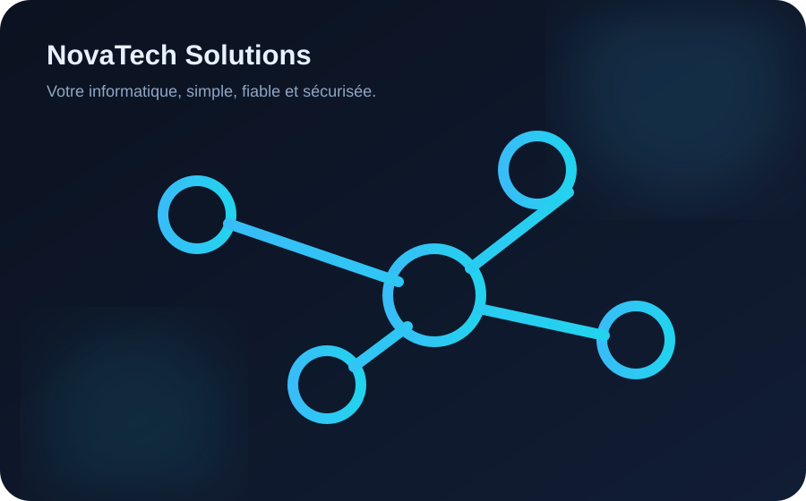

Dépannage informatique
Diagnostic des pannes, lenteurs, erreurs système, périphériques et logiciels.
NovaTech Solutions accompagne particuliers, indépendants et PME avec des solutions informatiques fiables, sécurisées et adaptées à leurs besoins.

Du poste de travail au réseau, nous intervenons sur les besoins du quotidien comme sur les projets d'infrastructure.
Diagnostic des pannes, lenteurs, erreurs système, périphériques et logiciels.
Installation, configuration, optimisation et sécurisation de vos connexions.
Protection des postes, bonnes pratiques, durcissement et sécurisation des accès.
Nous privilégions des solutions simples à maintenir, documentées et adaptées à la réalité de chaque client.

Expliquez-nous votre besoin. Nous revenons vers vous avec une première orientation et, si nécessaire, une proposition d'intervention.